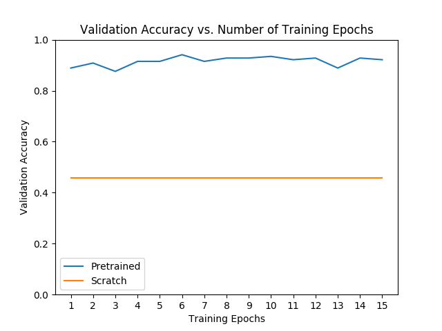

Torchvision模型微调
译者：ZHHAYO
作者: Nathan Inkawhich
在本教程中，我们将深入探讨如何微调和特征提取torchvision 模型，所有这些模型都已经预先在1000类的magenet数据集上训练完成。本程将深入介绍如何使用几个现代的CNN架构，并将为微调任意的PyTorch模型建立一个直觉。 由于每个模型架构是有差异的，因此没有可以在所有场景中使用的样板微调代码。 然而，研究人员必须查看现有架构并对每个模型进行自定义调整。
在本文档中，我们将执行两种类型的迁移学习：微调和特征提取。 在微调中，我们从一个预训练模型开始，然后为我们的新任务更新所有的模型参数，实质上就是重新训练整个模型。 在特征提取中，我们从预训练模型开始，只更新产生预测的最后一层的权重。它被称为特征提取是因为我们使用预训练的CNN作为固定的特征提取器，并且仅改变输出层。 有关迁移学习的更多技术信息，请参阅here和here.
通常，这两种迁移学习方法都遵循以下几个步骤：
- 初始化预训练模型
- 重组最后一层，使其具有与新数据集类别数相同的输出数
- 为优化算法定义我们想要在训练期间更新的参数
- 运行训练步骤
from __future__ import print_function
from __future__ import division
import torch
import torch.nn as nn
import torch.optim as optim
import numpy as np
import torchvision
from torchvision import datasets, models, transforms
import matplotlib.pyplot as plt
import time
import os
import copy
print("PyTorch Version: ",torch.__version__)
print("Torchvision Version: ",torchvision.__version__)
输出:
PyTorch Version: 1.0.0.dev20190117
Torchvision Version: 0.2.1
输入
以下为运行时需要更改的所有参数。 我们将使用的数据集hymenoptera_data可在此处下载。 该数据集包含两类：蜜蜂和蚂蚁，其结构使得我们可以使用 ImageFolder 数据集，不需要编写我们自己的自定义数据集。下载数据并设置 data_dir 为数据集的根目录。model_name是您要使用的模型名称，必须从此列表中选择：
[resnet, alexnet, vgg, squeezenet, densenet, inception]
其他输入如下：num_classes为数据集的类别数，batch_size是训练的batch大小，可以根据您机器的计算能力进行调整，num_epochsis是我们想要运行的训练epoch数，feature_extractis 是定义我们选择微调还是特征提取的布尔值。 如果feature_extract = False，将微调模型，并更新所有模型参数。 如果feature_extract = True，则仅更新最后一层的参数，其他参数保持不变。
# Top level data directory. Here we assume the format of the directory conforms
# to the ImageFolder structure
data_dir = "./data/hymenoptera_data"
# Models to choose from [resnet, alexnet, vgg, squeezenet, densenet, inception]
model_name = "squeezenet"
# Number of classes in the dataset
num_classes = 2
# Batch size for training (change depending on how much memory you have)
batch_size = 8
# Number of epochs to train for
num_epochs = 15
# Flag for feature extracting. When False, we finetune the whole model,
# when True we only update the reshaped layer params
feature_extract = True
辅助函数
在编写调整模型的代码之前，我们先定义一些辅助函数。
模型训练和验证代码
train_model函数处理给定模型的训练和验证。 作为输入，它需要PyTorch模型，数据加载器字典，损失函数，优化器，用于训练和验证epoch数，以及当模型是初始模型时的布尔标志。 is_inception 标志用于容纳 Inception v3 模型，因为该体系结构使用辅助输出，并且整体模型损失涉及辅助输出和最终输出，如此处所述。 这个函数训练指定数量的epoch,并且在每个epoch之后运行完整的验证步骤。 它还跟踪最佳性能的模型（从验证准确率方面），并在训练结束时返回性能最好的模型。 在每个epoch之后，打印训练和验证正确率。
def train_model(model, dataloaders, criterion, optimizer, num_epochs=25, is_inception=False):
since = time.time()
val_acc_history = []
best_model_wts = copy.deepcopy(model.state_dict())
best_acc = 0.0
for epoch in range(num_epochs):
print('Epoch {}/{}'.format(epoch, num_epochs - 1))
print('-' * 10)
# Each epoch has a training and validation phase
for phase in ['train', 'val']:
if phase == 'train':
model.train() # Set model to training mode
else:
model.eval() # Set model to evaluate mode
running_loss = 0.0
running_corrects = 0
# Iterate over data.
for inputs, labels in dataloaders[phase]:
inputs = inputs.to(device)
labels = labels.to(device)
# zero the parameter gradients
optimizer.zero_grad()
# forward
# track history if only in train
with torch.set_grad_enabled(phase == 'train'):
# Get model outputs and calculate loss
# Special case for inception because in training it has an auxiliary output. In train
# mode we calculate the loss by summing the final output and the auxiliary output
# but in testing we only consider the final output.
if is_inception and phase == 'train':
# From https://discuss.pytorch.org/t/how-to-optimize-inception-model-with-auxiliary-classifiers/7958
outputs, aux_outputs = model(inputs)
loss1 = criterion(outputs, labels)
loss2 = criterion(aux_outputs, labels)
loss = loss1 + 0.4*loss2
else:
outputs = model(inputs)
loss = criterion(outputs, labels)
_, preds = torch.max(outputs, 1)
# backward + optimize only if in training phase
if phase == 'train':
loss.backward()
optimizer.step()
# statistics
running_loss += loss.item() * inputs.size(0)
running_corrects += torch.sum(preds == labels.data)
epoch_loss = running_loss / len(dataloaders[phase].dataset)
epoch_acc = running_corrects.double() / len(dataloaders[phase].dataset)
print('{} Loss: {:.4f} Acc: {:.4f}'.format(phase, epoch_loss, epoch_acc))
# deep copy the model
if phase == 'val' and epoch_acc > best_acc:
best_acc = epoch_acc
best_model_wts = copy.deepcopy(model.state_dict())
if phase == 'val':
val_acc_history.append(epoch_acc)
print()
time_elapsed = time.time() - since
print('Training complete in {:.0f}m {:.0f}s'.format(time_elapsed // 60, time_elapsed % 60))
print('Best val Acc: {:4f}'.format(best_acc))
# load best model weights
model.load_state_dict(best_model_wts)
return model, val_acc_history
设置模型参数的.requires_grad属性
当我们进行特征提取时，此辅助函数将模型中参数的 .requires_grad 属性设置为False。默认情况下，当我们加载一个预训练模型时，所有参数都是 .requires_grad = True，如果我们从头开始训练或微调，这种设置就没问题。 但是，如果我们要运行特征提取并且只想为新初始化的层计算梯度，那么我们希望所有其他参数不需要梯度变化。这将在稍后更能理解。
def set_parameter_requires_grad(model, feature_extracting):
if feature_extracting:
for param in model.parameters():
param.requires_grad = False
初始化和重塑网络
现在来到最有趣的部分。在这里我们对每个网络进行重塑。请注意，这不是一个自动过程，并且对每个模型都是唯一的。 回想一下，CNN模型的最后一层（通常是FC层）与数据集中的输出类的数量具有相同的节点数。 由于所有模型都已在Imagenet上预先训练，因此它们都具有大小为1000的输出层，每个类一个节点。 这里的目标是将最后一层重塑为与之前具有相同数量的输入，并且具有与数据集中的类别数相同的输出数。 在以下部分中，我们将讨论如何更改每个模型的体系结构。 但首先，有一个关于微调和特征提取之间差异的重要细节。
当进行特征提取时，我们只想更新最后一层的参数，换句话说，我们只想更新我们正在重塑层的参数。 因此，我们不需要计算不需要改变的参数的梯度，因此为了提高效率，我们将其它层的.requires_grad属性设置为False。 这很重要，因为默认情况下，此属性设置为True。 然后，当我们初始化新层时，默认情况下新参数.requires_grad = True，因此只更新新层的参数。 当我们进行微调时，我们可以将所有.required_grad设置为默认值True。
最后，请注意inception_v3的输入大小为（299,299），而所有其他模型都输入为（224,224）。
Resnet
论文Deep Residual Learning for Image Recognition介绍了Resnet模型。有几种不同尺寸的变体，包括Resnet18，Resnet34，Resnet50，Resnet101和Resnet152，所有这些模型都可以从torchvision模型中获得。因为我们的数据集很小，只有两个类，所以我们使用Resnet18。 当我们打印这个模型时，我们看到最后一层是全连接层，如下所示：
(fc): Linear(in_features=512, out_features=1000, bias=True)
因此，我们必须将model.fc重新初始化为具有512个输入特征和2个输出特征的线性层：
model.fc = nn.Linear(512, num_classes)
Alexnet
Alexnet在论文ImageNet Classification with Deep Convolutional Neural Networks中被介绍，是ImageNet数据集上第一个非常成功的CNN。当我们打印模型架构时，我们看到模型输出为分类器的第6层
(classifier): Sequential(
...
(6): Linear(in_features=4096, out_features=1000, bias=True)
)
要在我们的数据集中使用这个模型，我们将此图层重新初始化为
model.classifier[6] = nn.Linear(4096,num_classes)
VGG
VGG在论文Very Deep Convolutional Networks for Large-Scale Image Recognition中被引入。Torchvision提供了8种不同长度的VGG版本，其中一些版本具有批标准化层。这里我们使用VGG-11进行批标准化。输出层与Alexnet类似，即
(classifier): Sequential(
...
(6): Linear(in_features=4096, out_features=1000, bias=True)
)
因此，我们使用相同的方法来修改输出层
model.classifier[6] = nn.Linear(4096,num_classes)
Squeezenet
论文SqueezeNet: AlexNet-level accuracy with 50x fewer parameters and <0.5MB model size描述了Squeeznet架构，使用了与此处显示的任何其他模型不同的输出结构。Torchvision的Squeezenet有两个版本，我们使用1.0版本。输出来自1x1卷积层，它是分类器的第一层：
(classifier): Sequential(
(0): Dropout(p=0.5)
(1): Conv2d(512, 1000, kernel_size=(1, 1), stride=(1, 1))
(2): ReLU(inplace)
(3): AvgPool2d(kernel_size=13, stride=1, padding=0)
)
为了修改网络，我们重新初始化Conv2d层，使输出特征图深度为2
model.classifier[1] = nn.Conv2d(512, num_classes, kernel_size=(1,1), stride=(1,1))
Densenet
论文Densely Connected Convolutional Networks引入了Densenet模型。 Torchvision有四种Densenet变型，但在这里我们只使用Densenet-121。 输出层是一个具有1024个输入特征的线性层：
(classifier): Linear(in_features=1024, out_features=1000, bias=True)
为了重塑这个网络，我们将分类器的线性层重新初始化为
model.classifier = nn.Linear(1024, num_classes)
Inception v3
最后，Inception v3首先在论文 Rethinking the Inception Architecture for Computer Vision中描述。该网络的独特之处在于它在训练时有两个输出层。第二个输出称为辅助输出，包含在网络的AuxLogits部分中。主输出是网络末端的线性层。注意，测试时我们只考虑主输出。 加载模型的辅助输出和主输出打印为：
(AuxLogits): InceptionAux(
...
(fc): Linear(in_features=768, out_features=1000, bias=True)
)
...
(fc): Linear(in_features=2048, out_features=1000, bias=True)
要微调这个模型，我们必须重塑这两个层。 可以通过以下方式完成
model.AuxLogits.fc = nn.Linear(768, num_classes)
model.fc = nn.Linear(2048, num_classes)
请注意，许多模型具有相似的输出结构，但每个模型的处理方式略有不同。 另外，请查看重塑网络的模型体系结构，并确保输出特征数与数据集中的类别数相同。
def initialize_model(model_name, num_classes, feature_extract, use_pretrained=True):
# Initialize these variables which will be set in this if statement. Each of these
# variables is model specific.
model_ft = None
input_size = 0
if model_name == "resnet":
""" Resnet18
"""
model_ft = models.resnet18(pretrained=use_pretrained)
set_parameter_requires_grad(model_ft, feature_extract)
num_ftrs = model_ft.fc.in_features
model_ft.fc = nn.Linear(num_ftrs, num_classes)
input_size = 224
elif model_name == "alexnet":
""" Alexnet
"""
model_ft = models.alexnet(pretrained=use_pretrained)
set_parameter_requires_grad(model_ft, feature_extract)
num_ftrs = model_ft.classifier[6].in_features
model_ft.classifier[6] = nn.Linear(num_ftrs,num_classes)
input_size = 224
elif model_name == "vgg":
""" VGG11_bn
"""
model_ft = models.vgg11_bn(pretrained=use_pretrained)
set_parameter_requires_grad(model_ft, feature_extract)
num_ftrs = model_ft.classifier[6].in_features
model_ft.classifier[6] = nn.Linear(num_ftrs,num_classes)
input_size = 224
elif model_name == "squeezenet":
""" Squeezenet
"""
model_ft = models.squeezenet1_0(pretrained=use_pretrained)
set_parameter_requires_grad(model_ft, feature_extract)
model_ft.classifier[1] = nn.Conv2d(512, num_classes, kernel_size=(1,1), stride=(1,1))
model_ft.num_classes = num_classes
input_size = 224
elif model_name == "densenet":
""" Densenet
"""
model_ft = models.densenet121(pretrained=use_pretrained)
set_parameter_requires_grad(model_ft, feature_extract)
num_ftrs = model_ft.classifier.in_features
model_ft.classifier = nn.Linear(num_ftrs, num_classes)
input_size = 224
elif model_name == "inception":
""" Inception v3
Be careful, expects (299,299) sized images and has auxiliary output
"""
model_ft = models.inception_v3(pretrained=use_pretrained)
set_parameter_requires_grad(model_ft, feature_extract)
# Handle the auxilary net
num_ftrs = model_ft.AuxLogits.fc.in_features
model_ft.AuxLogits.fc = nn.Linear(num_ftrs, num_classes)
# Handle the primary net
num_ftrs = model_ft.fc.in_features
model_ft.fc = nn.Linear(num_ftrs,num_classes)
input_size = 299
else:
print("Invalid model name, exiting...")
exit()
return model_ft, input_size
# Initialize the model for this run
model_ft, input_size = initialize_model(model_name, num_classes, feature_extract, use_pretrained=True)
# Print the model we just instantiated
print(model_ft)
输出:
SqueezeNet(
(features): Sequential(
(0): Conv2d(3, 96, kernel_size=(7, 7), stride=(2, 2))
(1): ReLU(inplace)
(2): MaxPool2d(kernel_size=3, stride=2, padding=0, dilation=1, ceil_mode=True)
(3): Fire(
(squeeze): Conv2d(96, 16, kernel_size=(1, 1), stride=(1, 1))
(squeeze_activation): ReLU(inplace)
(expand1x1): Conv2d(16, 64, kernel_size=(1, 1), stride=(1, 1))
(expand1x1_activation): ReLU(inplace)
(expand3x3): Conv2d(16, 64, kernel_size=(3, 3), stride=(1, 1), padding=(1, 1))
(expand3x3_activation): ReLU(inplace)
)
(4): Fire(
(squeeze): Conv2d(128, 16, kernel_size=(1, 1), stride=(1, 1))
(squeeze_activation): ReLU(inplace)
(expand1x1): Conv2d(16, 64, kernel_size=(1, 1), stride=(1, 1))
(expand1x1_activation): ReLU(inplace)
(expand3x3): Conv2d(16, 64, kernel_size=(3, 3), stride=(1, 1), padding=(1, 1))
(expand3x3_activation): ReLU(inplace)
)
(5): Fire(
(squeeze): Conv2d(128, 32, kernel_size=(1, 1), stride=(1, 1))
(squeeze_activation): ReLU(inplace)
(expand1x1): Conv2d(32, 128, kernel_size=(1, 1), stride=(1, 1))
(expand1x1_activation): ReLU(inplace)
(expand3x3): Conv2d(32, 128, kernel_size=(3, 3), stride=(1, 1), padding=(1, 1))
(expand3x3_activation): ReLU(inplace)
)
(6): MaxPool2d(kernel_size=3, stride=2, padding=0, dilation=1, ceil_mode=True)
(7): Fire(
(squeeze): Conv2d(256, 32, kernel_size=(1, 1), stride=(1, 1))
(squeeze_activation): ReLU(inplace)
(expand1x1): Conv2d(32, 128, kernel_size=(1, 1), stride=(1, 1))
(expand1x1_activation): ReLU(inplace)
(expand3x3): Conv2d(32, 128, kernel_size=(3, 3), stride=(1, 1), padding=(1, 1))
(expand3x3_activation): ReLU(inplace)
)
(8): Fire(
(squeeze): Conv2d(256, 48, kernel_size=(1, 1), stride=(1, 1))
(squeeze_activation): ReLU(inplace)
(expand1x1): Conv2d(48, 192, kernel_size=(1, 1), stride=(1, 1))
(expand1x1_activation): ReLU(inplace)
(expand3x3): Conv2d(48, 192, kernel_size=(3, 3), stride=(1, 1), padding=(1, 1))
(expand3x3_activation): ReLU(inplace)
)
(9): Fire(
(squeeze): Conv2d(384, 48, kernel_size=(1, 1), stride=(1, 1))
(squeeze_activation): ReLU(inplace)
(expand1x1): Conv2d(48, 192, kernel_size=(1, 1), stride=(1, 1))
(expand1x1_activation): ReLU(inplace)
(expand3x3): Conv2d(48, 192, kernel_size=(3, 3), stride=(1, 1), padding=(1, 1))
(expand3x3_activation): ReLU(inplace)
)
(10): Fire(
(squeeze): Conv2d(384, 64, kernel_size=(1, 1), stride=(1, 1))
(squeeze_activation): ReLU(inplace)
(expand1x1): Conv2d(64, 256, kernel_size=(1, 1), stride=(1, 1))
(expand1x1_activation): ReLU(inplace)
(expand3x3): Conv2d(64, 256, kernel_size=(3, 3), stride=(1, 1), padding=(1, 1))
(expand3x3_activation): ReLU(inplace)
)
(11): MaxPool2d(kernel_size=3, stride=2, padding=0, dilation=1, ceil_mode=True)
(12): Fire(
(squeeze): Conv2d(512, 64, kernel_size=(1, 1), stride=(1, 1))
(squeeze_activation): ReLU(inplace)
(expand1x1): Conv2d(64, 256, kernel_size=(1, 1), stride=(1, 1))
(expand1x1_activation): ReLU(inplace)
(expand3x3): Conv2d(64, 256, kernel_size=(3, 3), stride=(1, 1), padding=(1, 1))
(expand3x3_activation): ReLU(inplace)
)
)
(classifier): Sequential(
(0): Dropout(p=0.5)
(1): Conv2d(512, 2, kernel_size=(1, 1), stride=(1, 1))
(2): ReLU(inplace)
(3): AdaptiveAvgPool2d(output_size=(1, 1))
)
)
Load Data
现在我们知道输入尺寸大小必须是什么，我们可以初始化数据转换，图像数据集和数据加载器。请注意，模型是使用硬编码标准化值进行预先训练的，如here所述。
# Data augmentation and normalization for training
# Just normalization for validation
data_transforms = {
'train': transforms.Compose([
transforms.RandomResizedCrop(input_size),
transforms.RandomHorizontalFlip(),
transforms.ToTensor(),
transforms.Normalize([0.485, 0.456, 0.406], [0.229, 0.224, 0.225])
]),
'val': transforms.Compose([
transforms.Resize(input_size),
transforms.CenterCrop(input_size),
transforms.ToTensor(),
transforms.Normalize([0.485, 0.456, 0.406], [0.229, 0.224, 0.225])
]),
}
print("Initializing Datasets and Dataloaders...")
# Create training and validation datasets
image_datasets = {x: datasets.ImageFolder(os.path.join(data_dir, x), data_transforms[x]) for x in ['train', 'val']}
# Create training and validation dataloaders
dataloaders_dict = {x: torch.utils.data.DataLoader(image_datasets[x], batch_size=batch_size, shuffle=True, num_workers=4) for x in ['train', 'val']}
# Detect if we have a GPU available
device = torch.device("cuda:0" if torch.cuda.is_available() else "cpu")
输出:
Initializing Datasets and Dataloaders...
创建优化器
现在模型结构是正确的，微调和特征提取的最后一步是创建一个只更新所需参数的优化器。 回想一下，在加载预训练模型之后，但在重塑之前，如果feature_extract = True，我们手动将所有参数的.requires_grad属性设置为False。然后重新初始化默认为.requires_grad = True的网络层参数。所以现在我们知道应该优化所有具有 .requires_grad = True的参数。接下来，我们列出这些参数并将此列表输入到SGD算法构造器。
要验证这一点，可以查看要学习的参数。微调时，此列表应该很长并包含所有模型参数。但是，当进行特征提取时，此列表应该很短并且仅包括重塑层的权重和偏差。
# Send the model to GPU
model_ft = model_ft.to(device)
# Gather the parameters to be optimized/updated in this run. If we are
# finetuning we will be updating all parameters. However, if we are
# doing feature extract method, we will only update the parameters
# that we have just initialized, i.e. the parameters with requires_grad
# is True.
params_to_update = model_ft.parameters()
print("Params to learn:")
if feature_extract:
params_to_update = []
for name,param in model_ft.named_parameters():
if param.requires_grad == True:
params_to_update.append(param)
print("\t",name)
else:
for name,param in model_ft.named_parameters():
if param.requires_grad == True:
print("\t",name)
# Observe that all parameters are being optimized
optimizer_ft = optim.SGD(params_to_update, lr=0.001, momentum=0.9)
输出:
Params to learn:
classifier.1.weight
classifier.1.bias
运行训练和验证
最后一步是为模型设置损失，然后对设定的epoch数运行训练和验证函数。请注意，取决于epoch的数量，此步骤在CPU上可能需要执行一段时间。 此外，默认的学习率对所有模型都不是最佳的，因此为了获得最大精度，有必要分别调整每个模型。
# Setup the loss fxn
criterion = nn.CrossEntropyLoss()
# Train and evaluate
model_ft, hist = train_model(model_ft, dataloaders_dict, criterion, optimizer_ft, num_epochs=num_epochs, is_inception=(model_name=="inception"))
输出:
Epoch 0/14
----------
train Loss: 0.5981 Acc: 0.7131
val Loss: 0.3849 Acc: 0.8889
Epoch 1/14
----------
train Loss: 0.3282 Acc: 0.8402
val Loss: 0.3023 Acc: 0.9085
Epoch 2/14
----------
train Loss: 0.2248 Acc: 0.9139
val Loss: 0.3363 Acc: 0.8758
Epoch 3/14
----------
train Loss: 0.1924 Acc: 0.9057
val Loss: 0.2833 Acc: 0.9150
Epoch 4/14
----------
train Loss: 0.1359 Acc: 0.9344
val Loss: 0.3221 Acc: 0.9150
Epoch 5/14
----------
train Loss: 0.1583 Acc: 0.9426
val Loss: 0.3069 Acc: 0.9412
Epoch 6/14
----------
train Loss: 0.1918 Acc: 0.9344
val Loss: 0.3139 Acc: 0.9150
Epoch 7/14
----------
train Loss: 0.1950 Acc: 0.9262
val Loss: 0.2431 Acc: 0.9281
Epoch 8/14
----------
train Loss: 0.1534 Acc: 0.9344
val Loss: 0.2680 Acc: 0.9281
Epoch 9/14
----------
train Loss: 0.1796 Acc: 0.9262
val Loss: 0.2573 Acc: 0.9346
Epoch 10/14
----------
train Loss: 0.1181 Acc: 0.9549
val Loss: 0.2987 Acc: 0.9216
Epoch 11/14
----------
train Loss: 0.1401 Acc: 0.9262
val Loss: 0.2977 Acc: 0.9281
Epoch 12/14
----------
train Loss: 0.1463 Acc: 0.9221
val Loss: 0.3645 Acc: 0.8889
Epoch 13/14
----------
train Loss: 0.1388 Acc: 0.9508
val Loss: 0.3617 Acc: 0.9281
Epoch 14/14
----------
train Loss: 0.1799 Acc: 0.9180
val Loss: 0.3371 Acc: 0.9216
Training complete in 0m 19s
Best val Acc: 0.941176
与从头开始训练模型比较
只是为了好玩，看看如果我们不使用迁移学习，模型将如何学习。微调与特征提取的性能在很大程度上取决于数据集，但一般而言，两种迁移学习方法相对于从头开始训练模型，在训练时间和总体准确性方面产生了良好的结果。
# Initialize the non-pretrained version of the model used for this run
scratch_model,_ = initialize_model(model_name, num_classes, feature_extract=False, use_pretrained=False)
scratch_model = scratch_model.to(device)
scratch_optimizer = optim.SGD(scratch_model.parameters(), lr=0.001, momentum=0.9)
scratch_criterion = nn.CrossEntropyLoss()
_,scratch_hist = train_model(scratch_model, dataloaders_dict, scratch_criterion, scratch_optimizer, num_epochs=num_epochs, is_inception=(model_name=="inception"))
# Plot the training curves of validation accuracy vs. number
# of training epochs for the transfer learning method and
# the model trained from scratch
ohist = []
shist = []
ohist = [h.cpu().numpy() for h in hist]
shist = [h.cpu().numpy() for h in scratch_hist]
plt.title("Validation Accuracy vs. Number of Training Epochs")
plt.xlabel("Training Epochs")
plt.ylabel("Validation Accuracy")
plt.plot(range(1,num_epochs+1),ohist,label="Pretrained")
plt.plot(range(1,num_epochs+1),shist,label="Scratch")
plt.ylim((0,1.))
plt.xticks(np.arange(1, num_epochs+1, 1.0))
plt.legend()
plt.show()

输出:
Epoch 0/14
----------
train Loss: 0.7935 Acc: 0.5246
val Loss: 0.6931 Acc: 0.4575
Epoch 1/14
----------
train Loss: 0.6931 Acc: 0.5082
val Loss: 0.6931 Acc: 0.4575
Epoch 2/14
----------
train Loss: 0.6931 Acc: 0.5041
val Loss: 0.6931 Acc: 0.4575
Epoch 3/14
----------
train Loss: 0.6931 Acc: 0.5123
val Loss: 0.6931 Acc: 0.4575
Epoch 4/14
----------
train Loss: 0.6931 Acc: 0.5123
val Loss: 0.6931 Acc: 0.4575
Epoch 5/14
----------
train Loss: 0.6931 Acc: 0.4918
val Loss: 0.6931 Acc: 0.4575
Epoch 6/14
----------
train Loss: 0.6931 Acc: 0.5000
val Loss: 0.6931 Acc: 0.4575
Epoch 7/14
----------
train Loss: 0.6931 Acc: 0.5041
val Loss: 0.6931 Acc: 0.4575
Epoch 8/14
----------
train Loss: 0.6931 Acc: 0.5164
val Loss: 0.6931 Acc: 0.4575
Epoch 9/14
----------
train Loss: 0.6931 Acc: 0.5000
val Loss: 0.6931 Acc: 0.4575
Epoch 10/14
----------
train Loss: 0.6931 Acc: 0.5041
val Loss: 0.6931 Acc: 0.4575
Epoch 11/14
----------
train Loss: 0.6931 Acc: 0.5041
val Loss: 0.6931 Acc: 0.4575
Epoch 12/14
----------
train Loss: 0.6931 Acc: 0.4918
val Loss: 0.6931 Acc: 0.4575
Epoch 13/14
----------
train Loss: 0.6931 Acc: 0.5041
val Loss: 0.6931 Acc: 0.4575
Epoch 14/14
----------
train Loss: 0.6931 Acc: 0.5000
val Loss: 0.6931 Acc: 0.4575
Training complete in 0m 29s
Best val Acc: 0.457516
最后的想法及下一步
尝试运行其他模型，看看可以得到多好的正确率。另外，请注意特征提取花费的时间较少，因为在后向传播中我们不需要计算大部分的梯度。还有很多地方可以尝试。 你可以：
- 在更难的数据集上运行此代码，查看迁移学习的更多好处。
- 在新的领域（比如NLP，音频等）中，使用此处描述的方法，使用迁移学习更新不同的模型。
- 一旦您对一个模型感到满意，
- 可以将其导出为ONNX模型，或使用混合前端跟踪它以获得更快的速度和优化的机会。